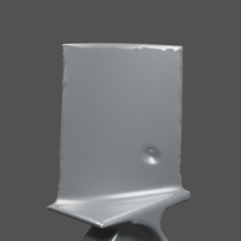
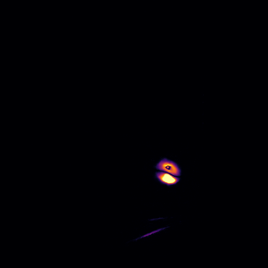
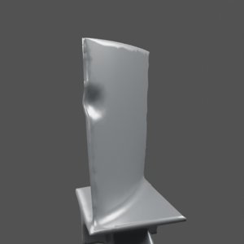
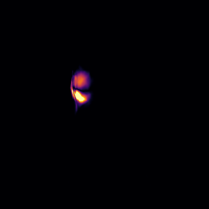
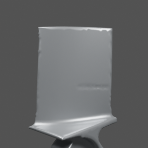
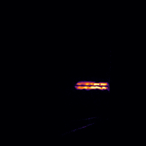
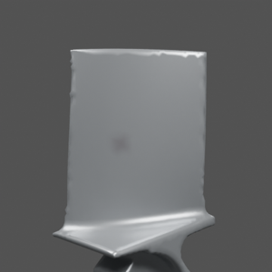
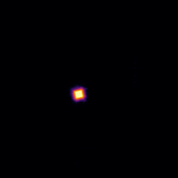
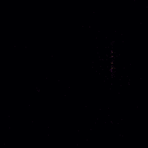

BladeDelta: latest results
Finding 3D damage on turbine blades from a CAD model and a few photos, and saying when the photos are not enough. All results on computer-rendered blades. Author: Afeefa Azam.
The four defect types









Top: the photo the method sees. Bottom: how much the photo differs from the healthy blade (brighter = bigger change).
Note: the simulated "nicks" are rounded dents on the blade edge and the "cracks" are long, shallow grooves (0.4 mm wide), closer to scratches. They are simplified stand-ins, not realistic sharp nicks or hairline cracks. Below, "nick" and "crack" refer to these stand-ins; realistic versions are being built and tested next.
1. Damage-type specialists + judge
Four specialists (dent, nick = edge dent, crack = groove, stain) each try to explain the photos; a judge picks the clear winner, says type uncertain when two fit about equally well, and calls it a stain or nothing when no physical damage is detected. Detection is the unchanged frozen method, so false alarms do not change. 136 cases on four held-out industrial blade designs.
34 of 136 cases processed (still running; refresh later). Type accuracy is over damage the frozen detector located.
Green = correct label, red = wrong; darker = more cases.
| True type | n | Dent | Nick | Crack | Uncertain | Stain | Nothing |
|---|---|---|---|---|---|---|---|
| Dent | 6 | 5 | 1 | ||||
| Nick | 8 | 2 | 1 | 3 | 1 | 1 | |
| Crack | 8 | 8 | |||||
| Stain | 6 | 1 | 2 | 3 | |||
| Healthy | 6 | 2 | 2 | 2 |
2. Four defect types: detection
Frozen method, 2 photos, no retuning. Stains and healthy blades should not be reported.
| Defect | Cases | Ours: located (damage) / reported (negatives) | SIFT: reported |
|---|---|---|---|
| Dent | 24 | 23/24 (96%) | 6/24 (25%) |
| Nick | 32 | 23/32 (72%) | 8/32 (25%) |
| Crack | 32 | 21/32 (66%) | 5/32 (16%) |
| Stain (should be 0) | 24 | 4/24 (17%) | 3/24 (12%) |
| Healthy (should be 0) | 24 | 2/24 (8%) | 3/24 (12%) |
False alarms 6 of 48 (12.5%) are above the 5% target set on Rotor37 blades; recalibrating on these designs is the next step.
3. Safety-weighted recall
Deeper defects count more (weight = true depth in mm; cracks count double). Critical = deeper than 0.2 mm, or any crack.
| Test set | Visible defects | Standard recall | Safety-weighted recall | Critical recall |
|---|---|---|---|---|
| Rotor37 sealed test (v1) | 37 | 54% | 73% | 92% (n=13) |
| Rotor37 second test (v1.1) | 46 | 46% | 53% | 67% (n=9) |
| Industrial held-out (v1.1) | 124 | 83% | 83% | 85% (n=87) |
| Four defects (v1.1) | 88 | 76% | 72% | 76% (n=88) |
On Rotor37 most misses are tiny dents: plain recall 54%, but 92% of dangerous dents are found.
4. What we learned about depth
- Location works across blade designs; depth does not: found dents are measured at a median 60% of their true depth on new designs (89% on Rotor37).
- Four photos instead of two find more dents (45 vs 36 of 60) but do not improve depth.
- Depth ranges do not help: they contained the true depth in only 36 of 109 cases, so the error is a systematic bias, not ambiguity.
- Next: low-angle (grazing) light and an appearance model trained on industrial blades.
Built from the result files; refresh after new runs finish.